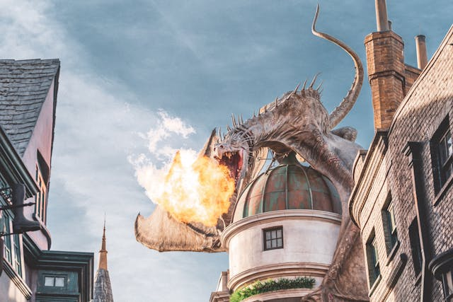
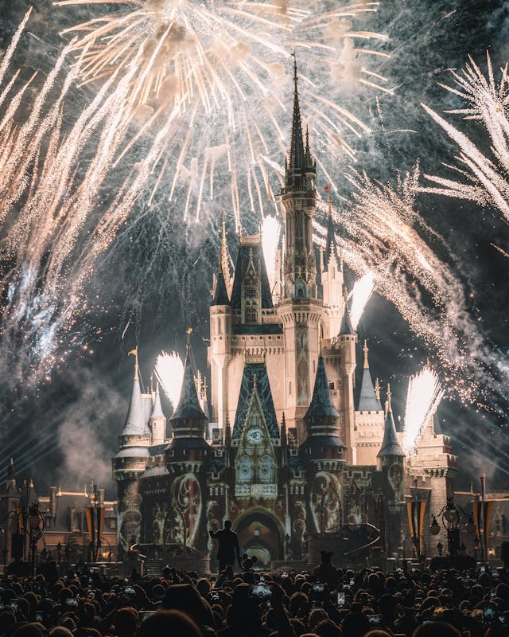
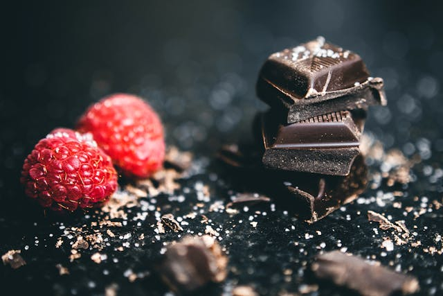

Favorite Books
- Wings of Fire(series)
- Tokyo Ghoul
- The Girl from the Other Side: Siúil, a Rún
Wings of Fire has been my longtime favorite series, as it has wonderful storylines and is set in a world of dragons. However, Tokyo Ghoul also has wonderful plot and an incredible powerscaling system. And The Girl from the Other Side is all of these, but being more complex makes it more confusing, though it is actually very comprehensible despite that.
Favorite Movies
- Mulan
- The Lion King
- Kung Fu Panda
These are all movies I watched as a child, and I loved them a lot. They were made when Disney actually made good movies for everyone, and I enjoyed the songs as well as the animations and storyline.
Favorite Foods
- Chocolate ice cream
- Dark chocolate
- Chocolate pudding
Chocolate is just about my favorite thing ever, and so of course everything here is chocolate.